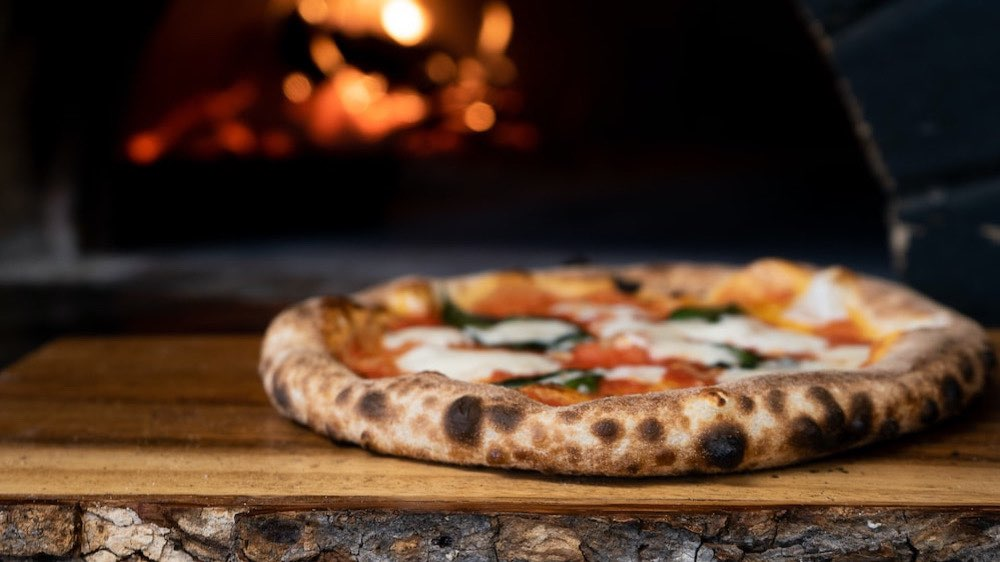

الوصفات الايطالية


البيتزا الايطالية

المقادير
- "مقادير العجينه"
- اثنين كوب من الدقيق
- ملعقة صغيرة من الخميرة الفورية
- ملعقة كبيرة من السكر
- ملعقة كبيرة من الزبادي
- ذرة ملح
- كوب من الماء الدافيء
طريقة التحضير
- نخلط المقادير الجافة الدقيق ،الملح، السكر، الخميرة
- نضيف ملعقة الزبادي
- ثم نضيف الماء الدافيء، تعجن مقادير عجينة البيتزا جيداً حتى تتكون عجينة لينة لا تلتصق باليد.
- تترك العجينة في الوعاء وتغطى جيداً و توضع في مكان دافيء وتترك لتختمر لمدة ساعة.
- تفرد عجينة البيتزا بعد ذلك بالسمك الذي تفضلينه ثم نضيف صلصة البيتزا والحشوات التي نفضلها
- تدهن صينية بزيت الزيتون ثم توضع بها البيتزا وتخبز في فرن بدرجة حرارة 180 درجة لمدة نصف ساعة على الرف الأوسط.